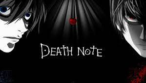

O jovem estudante Light Yagami achar um caderno com poderes sobrenaturais, chamado Death Note, no qual era possível matar uma pessoa apenas escrevendo seu nome no caderno. Quando o descobre, Light tenta eliminar todos os criminosos do mundo e dar à sociedade um mundo livre do mal.
As regras a seguir foram observadas durante a história da série, seja através do mangá, do anime ou dos OVAS. O humano que tiver seu nome escrito no Death Note morrerá. Esta é a primeira é mais importante regra do Death Note. Para que alguém morra através do caderno, o seu verdadeiro nome deve ser escrito numa das suas folhas.
Qual a história? A trama acompanha o jovem Light Yagami, um estudante bastante inteligente do ensino médio que descobre um caderno, chamado Death Note, com poderes sobrenaturais que permitem o seu dono matar quem tem o seu nome escrito nele. O guardião do curioso artefato é o um shinigami — uma espécie de deus da morte para a cultura japonesa — chamado Ryuk. Visando a possibilidade de livrar o mundo de criminosos, Light começa a escrever o nome de todos aqueles que ele acredita serem ruins para a sociedade.
Quem criou? Antes de ser um anime, "Death Note" é um mangá — histórias em quadrinhos japonesas. Escrita por Tsugumi Ohba e ilustrada por Takeshi Obata, os capítulos foram publicados entre 2003 e 2006 na revista "Weekly Shōnen Jump". Ao todo são 12 volumes que, no Brasil, estão disponíveis pela JBC. Há também a história paralela, chamada "Death Note: Another Note Los Angeles BB Renzoku Satsujin Jiken", lançado em 2006 e que aborda uma missão encabeçada por L. Já em 2020, foi lançada um volume único, de 87 páginas, intitulado de "Death Note: Special One-Shot". Ele mostra a volta de Ryuk ao mundo dos humanos em uma sociedade pós-Kira. A história conta com alguns elementos bastante a.